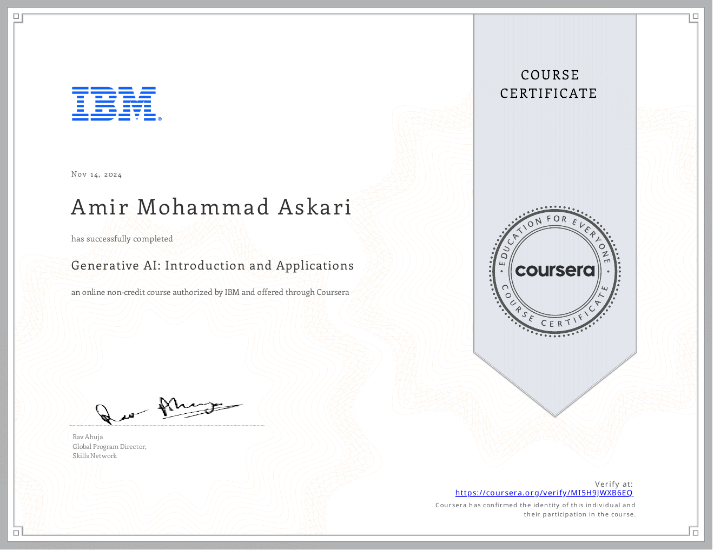

What I learned
I studied the evolution and capabilities of generative systems: text generation, image generation, code generation, audio/video/data applications, prompt-based workflows, and the ecosystem around modern GenAI tools.
This course gave me a broad conceptual map of generative AI. It was not a deep implementation course, but it helped organize what GenAI can do across modalities and tools.

I studied the evolution and capabilities of generative systems: text generation, image generation, code generation, audio/video/data applications, prompt-based workflows, and the ecosystem around modern GenAI tools.
It helped connect my classical ML/deep learning path with the current GenAI direction I am now pursuing through Transformers, LLMs, RAG, and agents.
Generative AI: Introduction and Applications was not just a certificate item. I used it as one layer in a longer path: understand the concept, implement it in code, test it on assignments or notebooks, then connect the idea to future portfolio systems.
This course gave me a broad conceptual map of generative AI. It was not a deep implementation course, but it helped organize what GenAI can do across modalities and tools. The reason it matters on this page is that it shows the exact stage where my learning moved forward, instead of presenting education as a flat list of names.
The most important layer was not memorizing definitions; it was learning how the course concepts behave when they are turned into working code, trained models, evaluation outputs, and notebooks.
I treated the course as a practical loop: watch the theory, re-implement the assignment logic, inspect outputs, record results, and then keep the code in a public repository as evidence of the learning process.
It helped connect my classical ML/deep learning path with the current GenAI direction I am now pursuing through Transformers, LLMs, RAG, and agents. This page is represented as a learning foundation. Even without a separate milestone gallery here, it explains the role of the course in the larger path from programming foundations to AI engineering.
I studied the evolution and capabilities of generative systems: text generation, image generation, code generation, audio/video/data applications, prompt-based workflows, and the ecosystem around modern GenAI tools. I also used the course to improve how I explain technical decisions: why a model is chosen, what assumptions it makes, where it fails, and what the next improvement should be. That explanation layer is important because my goal is end-to-end AI engineering, not only passing assignments.